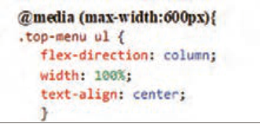
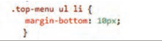
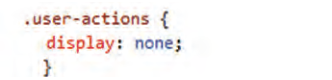
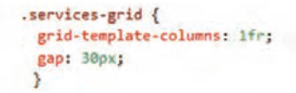
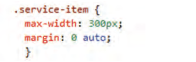
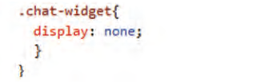

صفحه ۱۴۲
مدیا کوئری یک تکنیک CSS است که امکان تعیین ویژگیهای عناصر را بر اساس ویژگیهای مختلف دستگاهها (مانند اندازه صفحهنمایش، وضوح، جهتگیری و غیره) فراهم میکند. این قابلیت شرایطی را فراهم میکند که توسعه دهنده بتواند وبسایتها و اپلیکیشنهای وب خود را برای انواع دستگاهها (مانند موبایل، تبلت و دسکتاپ) بهینهسازی نماید.
مدیا کوئریها با استفاده از دستور media@ در CSS نوشته میشوند و دارای ساختار زیر هستند:
{ (condition) media media-type and@
CSS rules
}
استفاده از مدیاکوئری برای تغییر وضعیت عناصر در نمای موبایل
کار کارگاهی
استایلهای زیر را به انتهای سبکهای فایل index.html اضافه کنید. فایل را ذخیره کنید و نتیجه را در مرورگر بررسی کنید.
{)max-width:600px( media@

تغییر چیدمان عناصر منو از حالت افقی به
حالت عمودی
اشغال پهنای کامل برای هر عنصر لیست
وسط چین کردن متن گزینهها
}

تنظیم فاصلۀ عمودی بین گزینههای منو
}

مخفی کردن ناحیه user-action
}

;grid-template-columns: 1fr
ایجاد یک ستون واحد
افزایش فاصله عمودی بین گزینهها
}

قرار دادن آیتمهای خدمات در وسط سطر
}

پنهانسازی لوگوی چت ویجت
}
{
فعالیت
برای بررسی عملکرد مدیا کوئری، لبۀ سمت راست مرورگر را تا حد امکان به سمت چپ جابهجا کنید.
با کوچک شدن پهنای پنجره، گزینههای منو بهصورت عمودی چیده میشوند. ناحیۀ user-actions ناپدید میگردد و تصاویر خدمت ویژه بهصورت ستونی چیده میشوند.
صفحه ۱۴۳
ارزشیابی شایستگی طراحی ظاهر صفحات وب با CSS
استاندارد عملکرد کار: با استفاده از شیوههای CSS، ظاهر و چیدمانهای پیچیده وبسایتها را مطابق با استانداردها و طراحیهای بصری مشخص پیادهسازی نماید.
نمره
شرایط انجام کار (ابزار،مواد، تجهیزات،
ابزارهای
نتایج
ردیف
مرا حل کار
استاندارد (شاخصها/داوری/نمرهدهی)
کسب
زمان، مکان و ...)
ارزشیابی
ممکن شده
استفاده صحیح از هر سه روش (External ،Internal ،Inline تشخیص و اصلاح
3
تداخل استایلها رعایت ترتیب و اولویت استاندارد اعمال صحیح تغییر ظاهری روی عنصر مورد نظر اجرای کارها به چند روش اجرای کنجکاویها مشاهده نصب توسط
آشنایی با روشهای افزودن
رایانه یا لپتاپ سالم، ویرایشگر کد (VS Code یا هنرجو،
استفاده صحیح از هر سه روش (External ،Internal ،Inline تشخیص و
1
CSS، مدیریت آنها
مشابه)، مرورگر وب بهروز، زمان 25 دقیقه،
تمرین عملی
اصلاح تداخل استایلها رعایت ترتیب و اولویت استاندارد اعمال صحیح تغییر
2
مشاهده ظاهری روی عنصر موردنظر کدنویسی انجام نادرست یا ناقص هر یک از مراحل کاری1 با استفاده از ویژگی مربوط به قالببندی متن را به درستی انجام دهد.
از ویژگیهای مربوط به تعیین ظاهر عناصر برای تعیین رنگ متن، رنگ
3
زمینه، تصویر پسزمینه، کنترل تصویر پسزمینه، شفافیت و خط دور عناصر بهدرستی استفاده کند اجرای کارها با چند روش اجرای کنجکاویها
رایانه یا لپتاپرایانه یا لپتاپ سالم، ویرایشگر
مشاهده کد
2قالبدهی به متن
کد (VS Code یا مشابه)، مرورگر وب بهروز،
نوشته شده
با استفاده از ویژگی مربوط به قالببندی متن را بهدرستی انجام دهد.
زمان 25 دقیقه
کد نویسی
از ویژگیهای مربوط به تعیین ظاهر عناصر برای تعیین رنگ متن، رنگ
2
زمینه، تصویر پسزمینه، کنترل تصویر پسزمینه، شفافیت و خط دور عناصر بهدرستی استفاده کند.
اجرای نادرست و یا ناقص هر یک از مراحل کاری1 تعیین استایل عناصر صفحه براساس رابطۀ والد و فرزندی بین آنها با استفاده درست از انتخابگرهای ساده تعیین استایل عناصر براساس حالات و ویژگیهای خاص آنها با استفاده از انتخابگرهای شبه کلاس امکان
3
انتخاب عناصر براساس ویژگیهای آنها با استفاده از انتخابگرهای ترکیبی انجام کارها با چند روش انجام کنجکاویها مشاهده
رایانه، مرورگر برای تست زمان 15 دقیقه، اجرای عملکرد
3
کار با انتخابگرها در CSS
کار در کلاس عملی یا آزمایشگاه رایانه.
قالب، تمرین
تعیین استایل عناصر صفحه براساس رابطۀ والد و فرزندی بین آنها با گروهی استفاده درست از انتخابگرهای ساده تعیین استایل عناصر براساس حالات
2
و ویژگیهای خاص آنها با استفاده از انتخابگرهای شبه کلاس امکان انتخاب عناصر براساس ویژگیهای آنها با استفاده از انتخابگر ترکیبی به کارگیری انتخابگرهای ساده1
عناصر معنایی (header, main, footer, section, article, nav) درست
استفاده شده باشند صفحه استاندارد HTML5 داشته باشد انجام کنجکاویها انجام کار با روشهای دیگ ر3 مشاهده
رایانه، مرورگر برای تست زمان 30 دقیقه، اجرای
4کار با مدل های جعبهای
عملکرد
کار در کلاس عملی یا آزمایشگاه رایانه.
عناصر معنایی (header, main, footer, section, article, nav) درست
قالب استفاده شده باشند صفحه استاندارد HTML5 داشته باشد.2 انجام ناقص هریک ازمراحل1 عناصر جانبی (aside caption) بهدرستی اضافه شده باشند تصاویر همراه با توضیحات درست نمایش داده شوند ایجاد جدول با 2 سطر و 2
3
ستون ایجاد فرمهای ورود اطلاعات انجام کنجکاویها انجام کار با پرسش روشهای
دیگر
مدلهای نمایش عناصر
کتبی
در صفحه
رایانه مرورگر برای تست زمان ٠٣ دقیقه،
آزمون عملی
5
کار در کلاس عملی یا آزمایشگاه رایانه.
مشاهده عناصر جانبی (aside caption) بهدرستی اضافه شده باشند تصاویر همراه با توضیحات درست نمایش داده شوند ایجاد فرمهای ورود اطلاعات 2
عملکرد هنرآموز انجام ناقص هریک از مراحل1
صفحه ۱۴۴
استفاده مناسب از div و span برای ساختاردهی توضیحات و مستندسازی کد کامل باشد مزایای استفاده از تگهای معنایی (مانند article, section) مشاهده
3
را برای سئو و دسترسیپذیری توضیح دهند انجام کنجکاویها انجام کار
مستندسازی
با روشهای دیگر
رایانه مرورگر
و توضیحات
تکمیل ساختار با عناصر
منابع راهنما برای مستندسازی کد
نوشتهشده
6
استفاده مناسب از div و span برای ساختاردهی نظرها و مستندسازی
غیرمعنایی و مستندسازی
15 دقیقه
اجرای کد کامل باشد.2 صفحه و صحت نمایش نهایی انجام ناقص هریک از مراحل مزایای استفاده از تگهای معنایی (مانند
1
article, section) را برای سئو و دسترسیپذیری توضیح دهند.
احراز همه شایستگیهای غیرفنی2
شایستگیهای غیر فنی، ایمنی، بهداشت، توجهات زیست محیطی و نگرش:
عدم احراز هر یک از شایستگیهای غیرفنی1 بلی
ارزشیابی کار (شایستگی انجام کار)
خیر
توضیحات:
1 معیار شایستگی انجام کار:
کسب حداقل نمره 2 از مراحل 1، 2، 3، 4 و ٥ (مراحل بحرانی) کسب حداقل نمره 2 از بخش شایستگیهای غیرفنی، ایمنی، بهداشت، توجهات زیستمحیطی و نگرش کسب حداقل میانگین 2 از مراحل کار
2 تعریف سطوح شایستگی: صرفنظر از اینکه یک تکلیف کاری در چه سطحی از صلاحیت حرفهای انجام میشود، در هر محیط کاری ممکن است انجام هر کار با کیفیت مشخصی مورد انتظار باشد. سطح شایستگی انجام کار، معیار اساسی ارزشیابی است.
مهارت (سطح سه): ماهر و قادر به آموزش و هدایت دیگران، توانایی برنامهریزی و تحلیل، پاسخگویی در برابر کارهای خود، سروکار داشتن با سطح وسیعی از کارها و فعالیتها تسلط (سطح چهار): خبرگی در انجام کار و آموزش دیگران، ایجاد نوآوری، سازگاری، عیبیابی، هدایت و راهنمایی دیگران.
Page 142
A media query is a CSS technique that lets you set element properties based on various device features (such as screen size, resolution, orientation, and so on). This capability lets the developer optimize websites and web applications for different devices (such as mobile, tablet, and desktop).
Media queries are written with the media@ directive in CSS and have the following structure:
{ (condition) media media-type and@
CSS rules
}
Using a media query to change the state of elements in the mobile view
Workshop
Add the following styles to the end of the styles in the index.html file. Save the file and check the result in the browser.
{)max-width:600px( media@
Change the menu element layout from horizontal to
vertical
Take the full width for each list item
Center the option text
}
Set the vertical spacing between menu options
}
Hide the user-action area
}
;grid-template-columns: 1fr
Create a single column
Increase the vertical spacing between options
}
Place the service items in the middle of the row
}
Hide the chat widget logo
}
{
Activity
To check how the media query works, move the right edge of the browser as far left as possible.
When the window width gets smaller, the menu options are arranged vertically. The user-actions area disappears and the special service images are arranged in a column.
Page 143
Competency assessment for styling web page appearance with CSS
Work performance standard: Using CSS methods, implement the appearance and complex layouts of websites according to standards and specified visual designs.
Score
Work conditions (tools, materials, equipment,
Tools
Results
Row
Steps
Standard (indicators/judgment/scoring)
Earned
time, place, and so on)
Assessment
Possible
Correct use of all three methods (External, Internal, Inline) diagnosing and correcting
3
style conflicts following the standard order and priority correctly applying appearance changes to the intended element doing the work in several ways doing Try this activities observing installation by
Familiarity with methods of adding
a working computer or laptop, a code editor (VS Code or the student,
Correct use of all three methods (External, Internal, Inline) diagnosing and
1
CSS, managing them
similar), an up-to-date web browser, time 25 minutes,
Practical exercise
correcting style conflicts following the standard order and priority correctly applying appearance
2
visual observation on the intended element coding incomplete or incorrect performance of any of the work steps1 correctly perform text formatting using the related property.
Use the properties related to setting element appearance to set text color, background
3
color, background image, background image control, opacity, and element borders correctly doing the work in several ways doing Try this activities
a working computer or laptop, a code editor
Observing the written
2 Text formatting
code (VS Code or similar), an up-to-date web browser,
code
Correctly perform text formatting using the related property.
time 25 minutes
Coding
Use the properties related to setting element appearance to set text color, background
2
color, background image, background image control, opacity, and element borders correctly.
Incorrect or incomplete performance of any of the work steps1 setting page element styles based on the parent–child relationship between them using simple selectors correctly setting element styles based on their special states and properties using pseudo-class selectors ability
3
to select elements based on their properties using combined selectors doing the work in several ways doing Try this activities observing
Computer, browser for testing time 15 minutes, performance run
3
Working with selectors in CSS
Work in a practical class or computer lab.
Template, exercise
Setting page element styles based on the parent–child relationship between them as a group using simple selectors correctly setting element styles based on special
2
states and properties using pseudo-class selectors ability to select elements based on their properties using a combined selector using simple selectors1
عناصر معنایی (header, main, footer, section, article, nav) درست
be used correctly have a standard HTML5 page do Try this activities do the work with other methods3 observing
Computer, browser for testing time 30 minutes, performance
4 Working with box models
run
Work in a practical class or computer lab.
عناصر معنایی (header, main, footer, section, article, nav) درست
template be used correctly have a standard HTML5 page.2 incomplete performance of any of the steps1 side elements (aside caption) be added correctly images with captions be displayed correctly create a table with 2 rows and 2
3
columns create data-entry forms do Try this activities do the work by asking about other
methods
Element display models
Written
on the page
Computer browser for testing time 30 minutes,
Practical test
5
Work in a practical class or computer lab.
Observing side elements (aside caption) be added correctly images with captions be displayed correctly create data-entry forms 2
Instructor performance incomplete performance of any of the steps1
Page 144
Appropriate use of div and span for structuring explanations and documentation the code be complete explain the advantages of using semantic tags (such as article, section) observing
3
for SEO and accessibility do Try this activities do the work
Documentation
with other methods
Computer browser
and explanations
Completing the structure with
reference resources for code documentation
written
6
Appropriate use of div and span for structuring comments and documentation
non-semantic elements and documentation
15 minutes
Running the code be complete.2 page and correctness of the final display incomplete performance of any of the steps explain the advantages of using semantic tags (such as
1
article, section) for SEO and accessibility.
Meeting all non-technical competencies2
Non-technical competencies, safety, health, environmental considerations, and attitude:
Failure to meet any of the non-technical competencies1 Yes
Work assessment (competency to perform the work)
No
Explanation:
1 Criterion for competency to perform the work:
Earn at least a score of 2 from steps 1, 2, 3, 4, and 5 (critical steps) Earn at least a score of 2 from the non-technical competencies, safety, health, environmental considerations, and attitude section Earn at least an average of 2 from the work steps
2 Definition of competency levels: Regardless of the level of professional qualification at which a work task is performed, in every workplace a certain quality of work may be expected. The competency level for performing the work is the basic assessment criterion.
Skill (level three): skilled and able to train and guide others, ability to plan and analyze, accountable for one’s own work, dealing with a wide range of tasks and activities Mastery (level four): expertise in performing the work and training others, creating innovation, adaptability, troubleshooting, guiding and advising others.